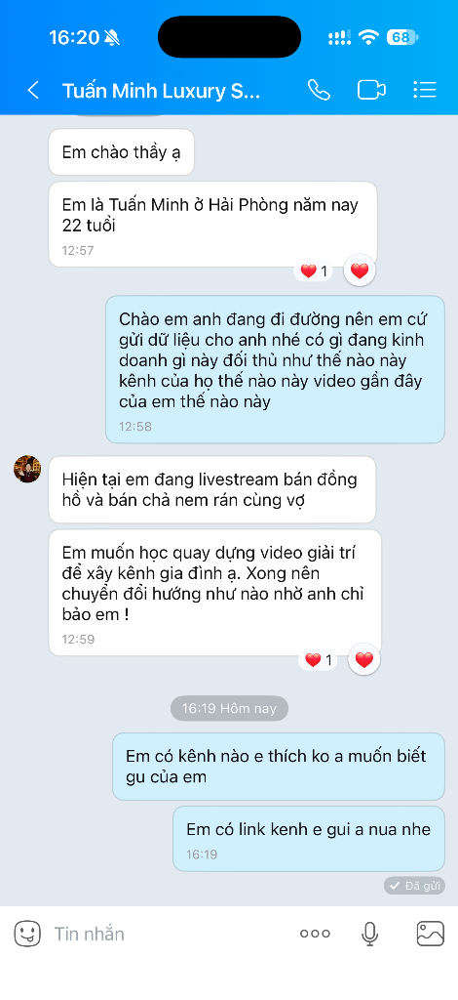

CASE TUẤN MINH: BÁN ĐỒNG HỒ, BẾP NEM VÀ CHIẾC BẪY "ANH HỀ SỬA ỐNG NƯỚC"
Phân tích toàn diện trường hợp Tuấn Minh (22 tuổi, Hải Phòng). Giải phẫu sự xung đột định vị chí mạng giữa Đồng hồ (Luxury ảo) vs Nem chả rán (Thực phẩm thiết yếu) vs Kênh giải trí gia đình. Chiến lược tách đôi kênh 100% và chuyển dịch sang mô hình Founder Craft Brand bền vững.

Hồ Sơ Hiện Trường Từ Zalo
Học viên: Tuấn Minh (22 tuổi, Hải Phòng)
Tên Zalo: Tuấn Minh Luxury S...
Công việc hiện tại: Livestream bán đồng hồ và bán chả nem rán cùng vợ.
Nguyện vọng của Tuấn: Muốn học quay dựng video giải trí để xây kênh gia đình, rồi chuyển đổi hướng.
Nút thắt cốt tử: Nhầm lẫn tai hại giữa "view giải trí" với "chuyển đổi mua hàng". Rơi vào cạm bẫy 'Anh hề sửa ống nước'.
Lời Đúc Kết & 4 Câu Lục Bát Thực Chiến
Người ta có thể mua một chiếc đồng hồ rẻ tiền vì lòng tham nhất thời, nhưng mua một hộp nem đưa vào bụng con cái là họ trao cả sức khỏe và thể diện gia đình. Khán giả không bao giờ mua nem vì Tuấn diễn hài giỏi. Họ mua vì nhìn thấy đôi vợ chồng trẻ 22 tuổi không lêu lổng, dám chôn chân bên chảo dầu nóng, tự tay chọn từng mớ miến, lạng thịt tươi và kiếm từng đồng tiền lương thiện.
Về nhen ngọn lửa hiên nhà cùng em.
Thịt tươi, giòn rụm cuốn nem,
Gói bao khó nhọc đổi xem nụ cười.”
Bộ Lọc Ngôn Từ Mộc Mạc Chuẩn Anh Việt
| ❌ Ngôn từ sách vở / Diễn kịch rác mạng | ✅ Ngôn từ mộc mạc chuẩn anh Việt |
|---|---|
| BỎ Tuấn Minh Luxury Store / Đẳng cấp quý ông doanh nhân | DÙNG Hai vợ chồng em ở Hải Phòng, sáng dậy sớm cuốn nem giao cho các mẹ rán ăn cơm |
| BỎ Video troll vợ triệu view / Diễn kịch bản drama giật gân | DÙNG Vừa bóc tôm vừa trêu nhau chuyện tiền chợ, tiếng cười tự nhiên bên chảo dầu mộc mạc |
| BỎ Nem gia truyền hoàng gia / Công thức bí truyền 5 sao | DÙNG Thịt nạc vai xay dẻo quánh trộn miến dong và nấm hương bến cảng, một cân thịt không pha một thìa bột độn |
| BỎ Xả kho cắt lỗ / Giật deal sốc duy nhất hôm nay trên livestream | DÙNG Hôm nay thịt lợn chợ sáng không được dẻo, em xin phép hoãn giao 15 đơn đến mai để đảm bảo cuốn nem chiên lên không bị bở |
Bóc Tách Hiện Trường Xung Đột & Mặt Nạ Thể Diện
Tầng 1: Lời Đãi Bôi Ngoài Thị Trường (Cheap Talk)
"Nem nhà làm sạch sẽ thơm ngon", "Đồng hồ chính hãng giá sốc". Khách hàng tự động lướt qua vì não bộ nhận diện là thông tin tiếp thị vô thưởng vô phạt không tốn chi phí xác thực.
Tầng 2: Bề Mặt Đời Thực Của Tuấn
22 tuổi, đứng live đồng hồ hò hét khô cổ họng, tỷ lệ hoàn hủy 30-40%; quay sang cuốn nem rán dầu mỡ bắn bỏng tay; tiền lời lắt nhắt từng chục bạc lẻ; áp lực pháp lý siết chặt định danh VNeID.
Tầng 2.5: Mặt Nạ Thể Diện Giấu Kín Của Khách Mua Nem
Nỗi sợ giấu kín: Rất sợ mua phải nem gia công độn thịt ôi, bì lợn hôi hoặc hàn the. Nếu rán lên bị chua hoặc con ăn đau bụng, người mẹ sẽ mất thể diện và tự dằn vặt mình tắc trách. Họ sẵn sàng trả giá cao hơn để mua chiếc mặt nạ: "Tôi là người mẹ thông thái, chỉ chọn thực phẩm tươi sạch đàng hoàng cho con".
• Nhóm Đặt Nem Tiếp Khách / Làm Cỗ:
Nỗi sợ giấu kín: Nem đem ra đĩa bị vỡ nát, ỉu xìu hoặc cháy khét làm xấu hổ trước khách khứa. Họ cần chiếc nem vàng ươm, vỏ giòn xốp rôm rốp để nở mày nở mặt.
Bẻ Khóa Chiếc Bẫy "Anh Hề Sửa Ống Nước" & Cơ Chế 70/30
1. Chiếc Bẫy "Anh Hề Sửa Ống Nước" (Văn Bản Chuẩn Logic Kênh):
Video hài gia đình đem lại Dopamine giải trí ngắn hạn. Nhưng người xem "đi xem xiếc rất vui nhưng tuyệt đối không ai nhờ anh hề đến nhà sửa ống nước". Một người vừa đóng tiểu phẩm hài troll vợ cợt nhả, lại vừa rán nem dầu mỡ, rồi lại giơ tay đeo đồng hồ xa xỉ... sẽ kích hoạt cơ chế phát hiện lừa dối (Deception Detection). Khách hàng sẽ không dám mua đồ ăn từ một người không nghiêm túc với nghề.
2. Tái Định Nghĩa "Giải Trí":
Không làm video hề nhảm hay drama giả tạo. Hãy giải trí bằng Chốt Chặn Thị Giác & Âm Thanh (MVQ / ASMR): Tiếng dao cắt nem giòn rôm rốp; tiếng dầu sôi tí tách; thớ thịt nạc vai hồng hào xen kẽ nấm hương miến dong; và giải trí bằng Sự Thấu Cảm Đời Sống: Tiếng cười chân thật, ấm áp của hai vợ chồng trẻ chăm chỉ lao động bên gian bếp nhỏ.
3. Cơ Chế 70/30 B-Roll Lao Động Thật vs Woodsmall:
- 70% B-Roll Lao Động Thật: Máy quay đặt cố định góc bếp quay cảnh hai vợ chồng cuốn nem, thái thịt, chở nhau đi chợ sáng. Không diễn, không gồng.
- 30% Nhát Cắt Woodsmall Bắt Bệnh 5s: Cắt đôi chiếc nem chỉ ra lỗi vì sao bị ngấm dầu; mẹo thoa nước cốt chanh lên lá bánh đa để nem giòn lâu suốt 2 tiếng trên mâm cỗ.
Bảng Kịch Bản Thực Chiến Dành Cho Tuấn
Mẫu 1: 70% Đời Thật (BTS) — Vợ Chồng 22 Tuổi Bên Chảo Dầu
| 📹 HÌNH ẢNH B-ROLL (LAO ĐỘNG THẬT) | 🎙️ LỜI THOẠI TUẤN (GIỌNG MỘC CHÂN THÀNH) |
|---|---|
|
• Cam A (Toàn): Góc bếp 6h sáng, nắng sớm rọi qua cửa sổ. Vợ buộc tóc tạp dề. Tuấn bưng thau thịt nạc vai vừa xay đặt lên bàn inox. • Cam B (Cận): Bàn tay vợ rải tiêu thơm, nấm hương, miến dong vào thau thịt. Tuấn đảo đều thoăn thoắt. • Cam C (Chi tiết): Vợ cuốn nem vuông vức, Tuấn xếp vào khay lót màng bọc. Hai đứa nhìn nhau cười mộc mạc. • Cam A: Tuấn đóng hộp, dán nhãn giấy mộc ghi rõ ngày sản xuất. |
"Nhiều bạn bè bảo 22 tuổi sao không đi làm cái gì nhàn hạ bóng bẩy, lại đâm đầu vào cái xưởng bếp dầu mỡ này cùng vợ... Thực ra tụi em cũng từng thử nhiều thứ, từng mơ mộng làm giàu nhanh. Nhưng sau cùng nhận ra: chỉ có hạt gạo lạng thịt mình tự tay làm sạch sẽ, người ta ăn vào thấy ngon miệng thì đồng tiền kiếm được mới vững bền. Vợ em kỹ tính lắm, mẻ thịt nào hơi sẫm màu là trả lại hàng ngay, bảo bán cho các mẹ cũng như làm cho bố mẹ mình ăn. Cứ cần mẫn thế này, chậm một chút nhưng tối về ngủ ngon các bác ạ." |
Mẫu 2: 30% Woodsmall — Vì Sao Rán Nem Bị Ngấm Dầu Ngấy Cổ?
| 📹 HÌNH ẢNH B-ROLL (LAO ĐỘNG THẬT) | 🎙️ LỜI THOẠI TUẤN (CHUYÊN MÔN VI MÔ) |
|---|---|
|
• Cam B (Cận): Tuấn cầm chiếc nem rán sũng dầu đặt cạnh chiếc nem khô ráo vàng ươm của bếp mình. • Cam C (Chi tiết): Tuấn nhúng đầu đũa gỗ vào chảo dầu, bọt sủi tăm li ti quanh đầu đũa. • Cam B: Dao cắt đôi chiếc nem vừa gắp ra, âm thanh vỡ rôm rốp, nhân thịt khô ráo bốc khói thơm nức. |
"Đừng bao giờ thả nem vào chảo khi dầu chưa đủ độ sôi, nếu các bác không muốn cắn chiếc nem ngập mỡ ngấy tận cổ. Mẹo cực đơn giản của nhà em: nhúng đầu đũa gỗ thấy sủi bọt tăm đều là lúc dầu đạt khoảng 160 độ C. Thả nem vào lúc này, lớp vỏ ngoài sẽ se lại ngay lập tức tạo thành màng chắn, giữ trọn vị ngọt của nhân mà mỡ không ngấm vào trong. Làm đúng kỹ thuật thì chiếc nem chiên lên mới khô ráo, vỏ mỏng giòn rụm và ăn đến cái thứ 3 vẫn không hề bị ngấy." |
Khung Sản Xuất 1 Tripod Tại Bếp Nem
| Thứ | Định dạng & Tỷ lệ | Thao tác vi mô tại bếp | Mục tiêu chuyển đổi |
|---|---|---|---|
| Thứ 2 | 70% Đời thực BTS | 6h sáng đi chợ chọn thịt nạc vai dẻo quánh; hai vợ chồng cười đùa trên xe máy | Gây thiện cảm về cặp vợ chồng trẻ siêng năng, tử tế |
| Thứ 3 | 30% Woodsmall | Bắt bệnh vì sao cho lòng trắng trứng làm nem nhanh mủn lá bánh đa | Khẳng định tay nghề làm bếp có kỹ thuật sâu |
| Thứ 4 | Chốt Chặn Thị Giác (MVQ) | ASMR chiên nem sôi tí tách, tiếng dao cắt nem rôm rốp rưới mắm tỏi ớt | Kích thích vị giác mãnh liệt, chốt đơn bữa tối |
| Thứ 5 | 70% Đời thực Logistics | Quy trình đóng khay hút chân không, đóng thùng xốp đá gel gửi xe khách Hà Nội | Minh chứng năng lực ship tỉnh an toàn, không hỏng |
| Thứ 6 | Tình huống Chịu thiệt | Từ chối nhận 20 hộp khách giục gấp vì thịt chợ chiều không đủ độ tươi dẻo | Costly Signaling: Đặt an toàn của khách lên trên tiền |
| Thứ 7 | Chạm Tầng 2.5 Tâm lý | Bóc tách nỗi sợ nem độn bột công nghiệp, so sánh tỷ lệ thịt thật vs phụ gia | Bảo vệ thể diện của người nội trợ gia đình |
| Chủ nhật | Sum vầy gia đình | Mâm cơm gia đình hai vợ chồng ăn cùng bố mẹ, đĩa nem nóng hổi ở giữa | Neo giữ giá trị tổ ấm đầm ấm, củng cố lòng tin bền vững |
3 Nguyên Tắc Sống Còn Của Bếp Nem
1. Tuyệt Đối Không Biến Gian Bếp Thành Rạp Xiếc Diễn Hài Nhảm
Hề có thể đem lại tiếng cười nhất thời, nhưng người tiêu dùng chỉ tin tưởng mua thức ăn từ một người thợ bếp sạch sẽ, chân thành và đàng hoàng. Không bao giờ đóng kịch drama để câu view rác.
2. Thà Chịu Thiệt Từ Chối Đơn Chứ Không Dùng Nguyên Liệu Kém Phẩm Chất
Một mẻ nem dùng thịt ôi hay dầu chiên đi chiên lại là tự tay đốt sạch toàn bộ danh tiếng. Chấp nhận chậm đơn để giữ vững chuẩn mực chất lượng.
3. Phân Tách Tuyệt Đối 100% Hai Thế Giới Nhận Diện
Không để bất kỳ hình ảnh đồng hồ hào nhoáng nào xuất hiện trên thớt nem. Sự mập mờ về định vị sẽ giết chết niềm tin của khách hàng.
Chiến Lược Founder Craft Brand
• Xây Dựng Founder Craft Brand (Thương Hiệu Bếp Nghề Có Người Bảo Chứng): Thương hiệu là Bếp Nem Hai Đứa / Nem Vợ Chồng Trẻ Đất Cảng với sản phẩm chuẩn hóa (hút chân không, công thức, bao bì). Hai vợ chồng là linh hồn bảo chứng sự chăm chỉ, sạch sẽ. Khi quy mô tăng lên 300-500 hộp/ngày, thương hiệu vẫn tự vận hành được.
• Lộ Trình 3 Giai Đoạn:
- Tháng 1-3: Tối live đồng hồ duy trì dòng tiền; ngày dựng 1 máy quay góc bếp làm kênh Bếp Nem.
- Tháng 4-6: Kênh nem tạo doanh thu ổn định B2C và đổ sỉ; giảm live đồng hồ xuống 2 buổi/tuần.
- Tháng 7-12: Rút hoàn toàn khỏi mảng đồng hồ trước hạn siết định danh VNeID; tập trung 100% làm xưởng nem sạch bền vững.